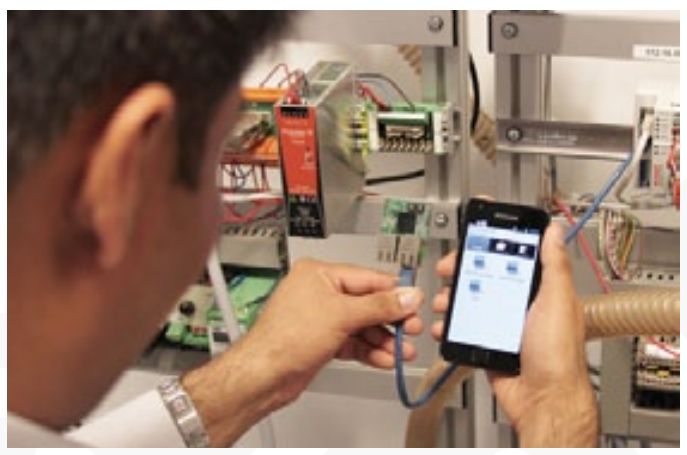
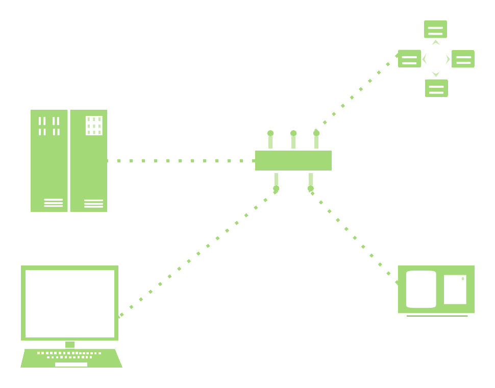
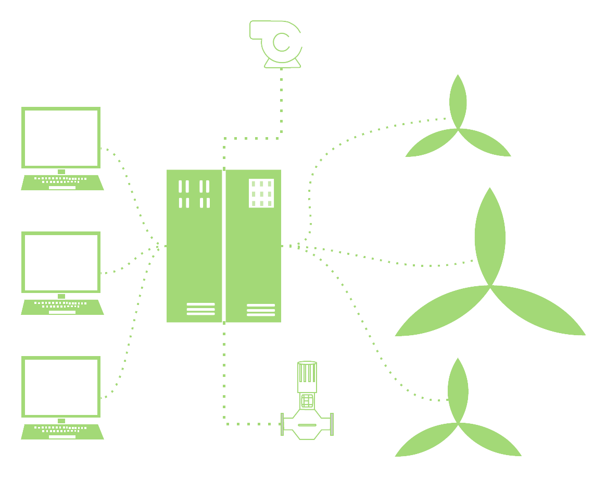
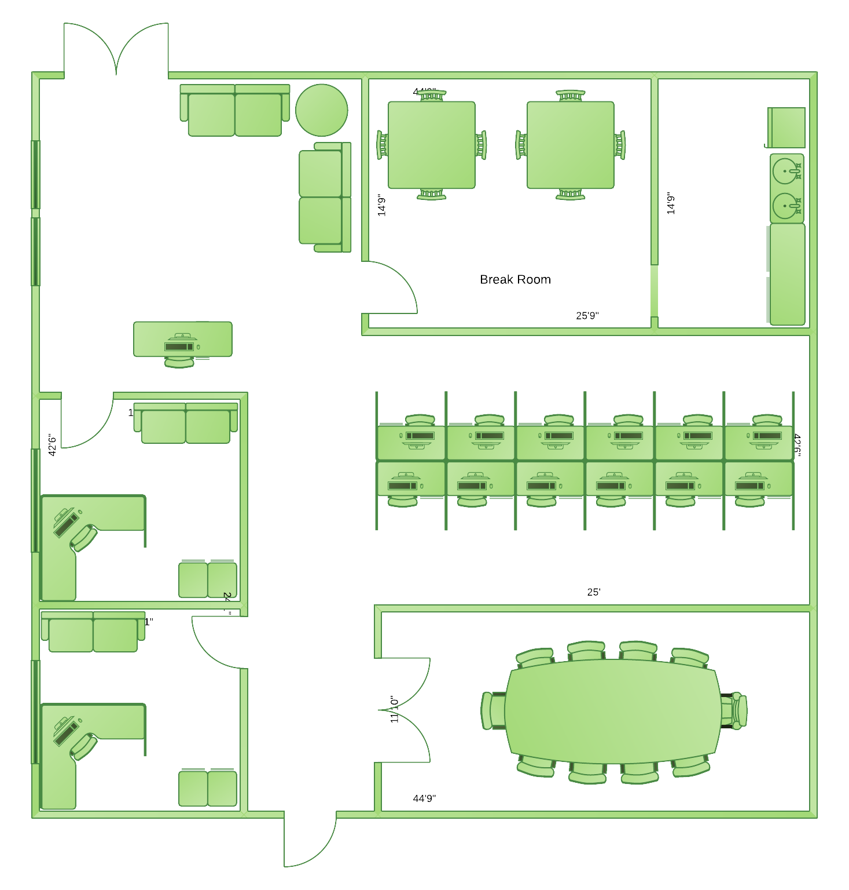
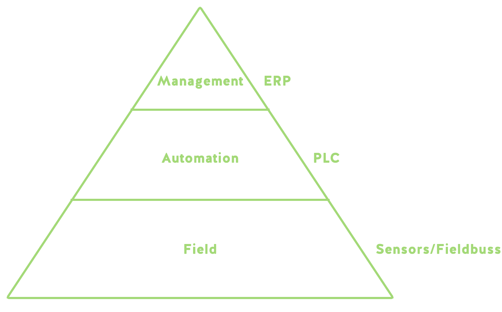
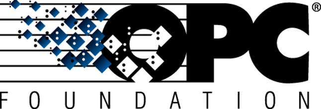
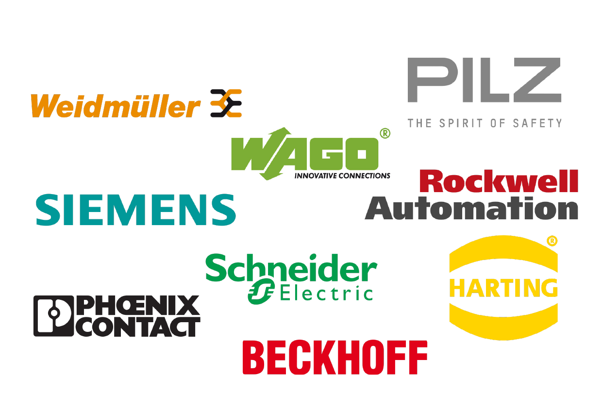
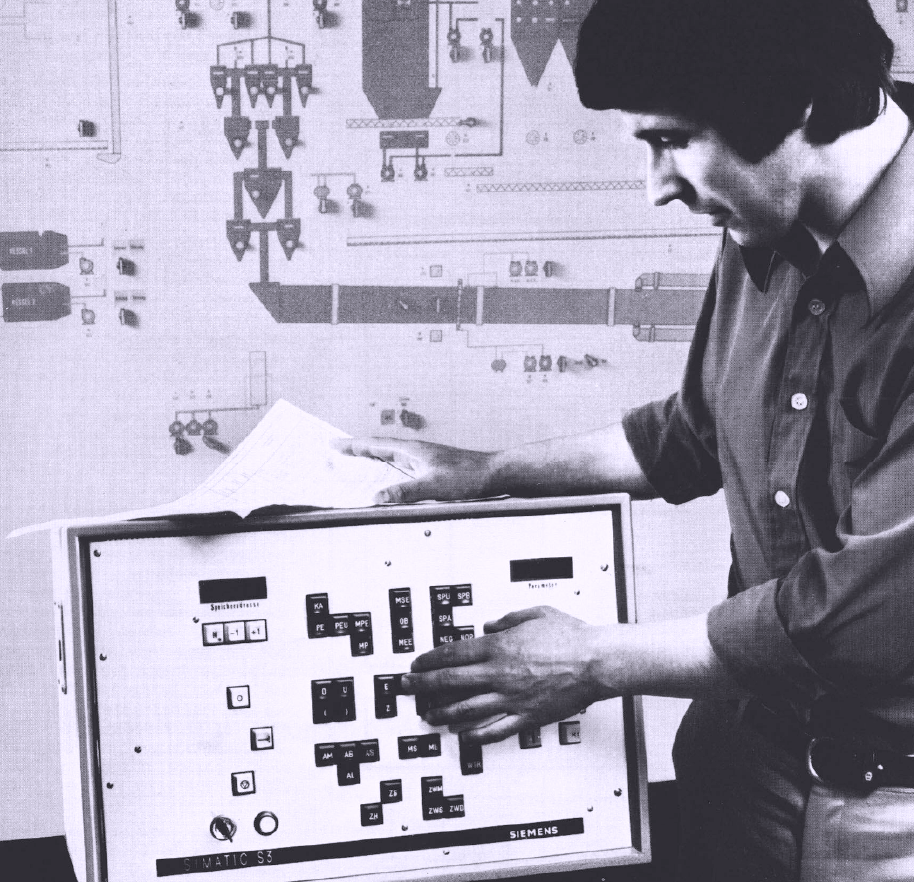
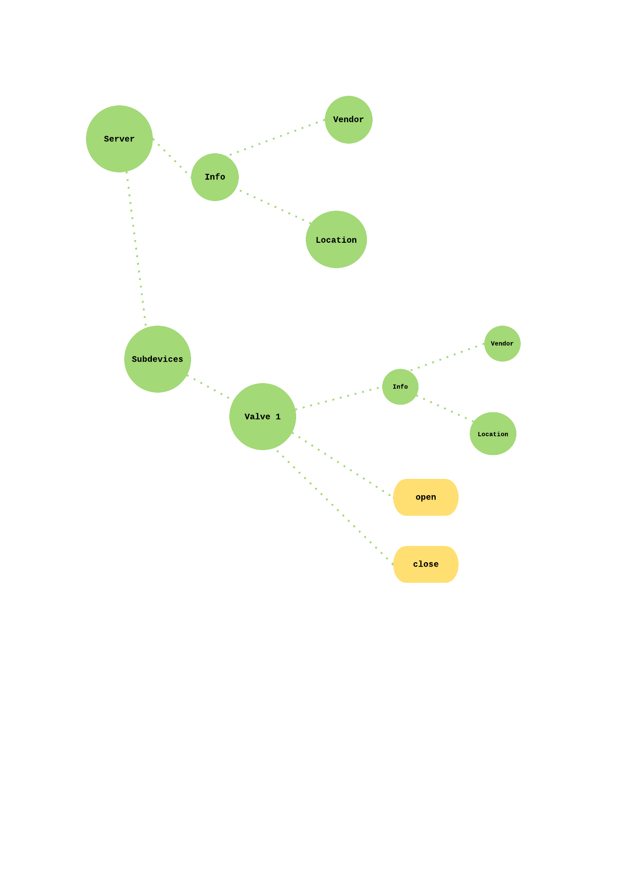
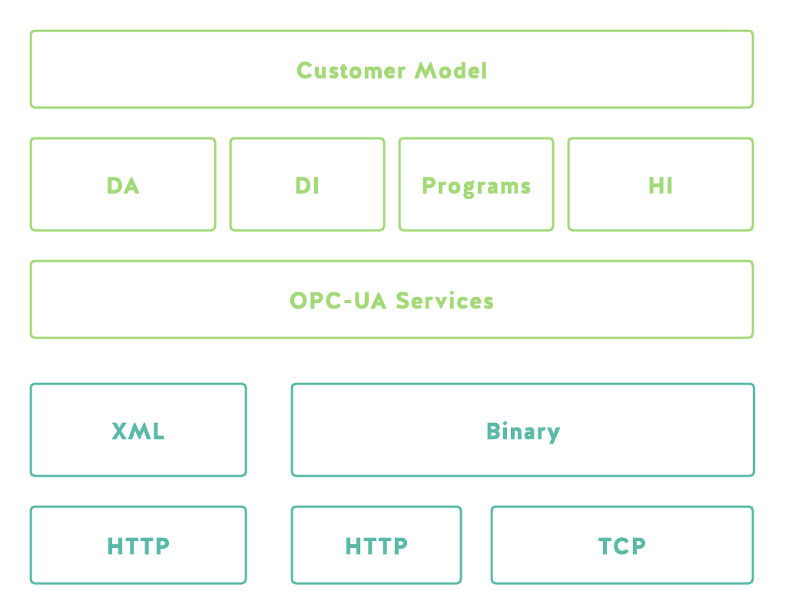

OPC-UA in the Context of Industry 4.0
Martin Baum
OPC-What ?
the bridge between the enterprise and the embedded world
Why ?
- Interoperability
- Robustness
- Scalability
- Security





The OPC Foundation
since 1996 - OLE Objects for Process Control


Industry 4.0

History of Industrial Automation
- (Electro-) Mechanical Automation since the beginning of the industrial revolution
- PLC/SPS - 1968 by Honeywell
- Industrial Ethernet since 1985
- Rise of contemporary bus systems (Modbus, DALI, Profibus, Foundation)
- Multiprotocol Automation Systems
History of OPC-UA
- first approach to achieve Interoperability in 1995
- OPC Spec in 1996
- origins in MS DCOM
- first release in 2006
- rework in 2009 - becoming IEC standard
Hitchhikers guide through OPC-UA
Address Space
- Everything is a Node
- Nodes are related to each other
- Nodes have Attributes
- Nodes are of a certain type
- Dynamic address space

Type System
- 18 atomic base types
- VariableTypes, Object Types,
- Inheritance
- Instanciation
Messages
- All messaging is done by services
- Services define messaging protocols
- Browse, Read, Write, Sessions, Subscriptions
- Request Response Based
Transport
- Services define structure of messages
- Binary or XML Encoding
- transport over http or plain tcp
- set of primitive types
- cascading structured types

Security
- Session and Role based
- TLS Encryption on the Wire
- Encrypted Credentials
- Authentication via X.509 certificates
- not so up-to-date algorithms
Scalability
- Scalable via Encodings
- Binary for Embedded
- XML for Enterprise
- From ERP to OPC On-a-Chip
Information Models
- Model Libaries
- Device Integration
- Data Access
- History Access
- Programs
- Information Models for certain Devices
Discovery
- Discover OPC Servers in the Local Link
- via mDNS
History Access
- HistoryRead Service
- Write Values to Databases
- Data Aggregation
- Defines Additional Attributes
Working SDKs
.NET, Java, C++, C, Node.js
Vendors
- Unitied Automation
- Softing
- Matrikon OPC
What is OPC-UA ?
- CORBA 2.0 for Embedded
- Not a Industrial BUS
- All-In-One Solution
Positive
- + Scalable
- + Better what you had before
- + Millions of Possiblities
Negative
- - Overengineering
- - Bound to Request/Response
- - Bound to Client/Server
- - Bound to Extensive Modelling
Thanks!
martin.baum@treestructure.net